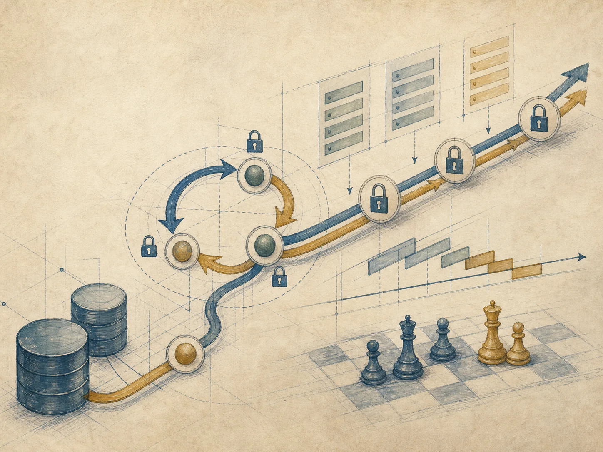

- 01区分一直被插队与互相等锁
- 02画等待图，并说明回滚如何解除死锁
- 03算出两个串行参照和错误交错的结果
- 04从冲突操作画优先图，给出串行次序
- 05找出首次解锁，判断是否遵守 2PL
- 06分清可串行化、恢复保证与死锁风险

DBPA · 12.2
死锁、可串行性
与两段锁协议
等待环定位死锁，冲突次序确定串行参照
 VER. 2608
Built with impress.js
VER. 2608
Built with impress.js
DBPA | CH12 | 12.2
学习目标
依据锁请求与读写操作判断死锁、串行次序和 2PL
2/21
LOCKS AND SCHEDULES
DBPA | CH12 | 12.2
请求饥饿：T2 持续被后来者插队
教材称这种现象为“活锁”；本例具体表现为请求饥饿
| 时刻 | A 的锁交给谁 | T2 的状态 |
|---|---|---|
| 1 | T1 持有 X(A) | 请求 X(A)，等待 |
| 2 | T1 释放，后来者 T3 先获准 | 仍在等待 |
| 3 | T3 释放，后来者 T4 又先获准 | 仍在等待 |
| 此后 | 新请求不断获准 | 可能一直等不到 |
Takeaway
公平排队防止持续插队；饥饿可能发生在无等待环的系统中
3/21
LOCKS AND SCHEDULES
DBPA | CH12 | 12.2
T1 等 B，T2 等 A：两条等待边成环
本例只有两个对象，X 锁相互排斥；未获准的请求不能执行读写
| 步 | 锁动作 | 当前持锁或等待 |
|---|---|---|
| 1 | T1 取得 X(A) | T1 持有 A |
| 2 | T2 取得 X(B) | T2 持有 B |
| 3 | T1 请求 X(B)，未获准 | T1 → T2 |
| 4 | T2 请求 X(A)，未获准 | T2 → T1 |
Takeaway
等待边：请求者 → 冲突锁持有者。本例 T1 → T2 → T1，两个事务都无法继续
4/21
LOCKS AND SCHEDULES
DBPA | CH12 | 12.2
回滚 T2，释放 B 并唤醒 T1
假定系统把回滚代价较低的 T2 选为牺牲事务
- 01中止：取消 T2 的待处理请求，开始回滚 T2
- 02清理：撤销 T2 的未提交修改，再释放它持有的 B 锁
- 03唤醒：T1 获得 X(B)，完成操作并结束事务
- 04重试：系统或应用按业务规则决定是否重试 T2
Takeaway
T2 撤销未提交修改后释放锁；公平选择牺牲事务可减少重复回滚
5/21
LOCKS AND SCHEDULES
DBPA | CH12 | 12.2
死锁预防与检测方法
等待超时可触发中止或重试，较长的正常等待也会超时
| 办法 | 具体规则 | 代价或边界 |
|---|---|---|
| 一次封锁 | 全部一起获准，否则全不持有 | 需预知对象，并发度较低 |
| 顺序封锁 | 本例的 X 请求都按 A、B 顺序 | 避免相反顺序成环 |
| 超时处理 | 等待超过阈值就中止或重试 | 不能单凭时间确认死锁 |
| 等待图检测 | 请求等待时或定期查有向环 | 发现环后选择事务回滚 |
Takeaway
一次封锁采用全有或全无规则；逐个取锁可能形成持有并等待
6/21
LOCKS AND SCHEDULES
DBPA | CH12 | 12.2
两个串行次序的计算结果
独立计算例：初始 A=B=2；每个事务都保持自己的读写顺序
| 事务或次序 | 实际计算 | 最终 A，B |
|---|---|---|
| T1 | 读 B；写 A=B+1 | — |
| T2 | 读 A；写 B=A+1 | — |
| T1 → T2 | T1 读 2 写 A=3；T2 读 3 写 B=4 | 3，4 |
| T2 → T1 | T2 读 2 写 B=3；T1 读 3 写 A=4 | 4，3 |
Takeaway
并发应等价于某个串行次序；一次数值相同不足以证明等价
7/21
LOCKS AND SCHEDULES
DBPA | CH12 | 12.2
旧值交错：A=3，B=3
R 表示读到局部变量，W 表示把计算后的值写回
| 顺序 | 执行的操作 | 局部值或数据库状态 |
|---|---|---|
| 1 | R1(B) | T1 记住 B=2 |
| 2 | R2(A) | T2 记住 A=2 |
| 3 | W1(A,3) | A=3，B=2 |
| 4 | W2(B,3) | A=3，B=3 |
Takeaway
交错结果 3，3 与两个串行参照均不同；读写冲突形成相反的先后要求
8/21
LOCKS AND SCHEDULES
DBPA | CH12 | 12.2
冲突操作：同一数据项上的跨事务读写
两个操作分属不同事务、访问同一数据项，且至少一方写入
| 操作对 | 判断 | 交换后可能改变什么 |
|---|---|---|
| R1(B) 与 W2(B) | 冲突 | T1 读到旧 B 还是新 B |
| W1(A) 与 R2(A) | 冲突 | T2 读到旧 A 还是新 A |
| W1(A) 与 W2(A) | 冲突 | A 最后由谁写入 |
| R1(A) 与 R2(A) | 不冲突 | 两个操作都只读 |
| W1(A) 与 R2(B) | 不冲突 | 访问不同数据项 |
Takeaway
相邻、不冲突的跨事务操作可以交换，各事务内部顺序保持不变
9/21
LOCKS AND SCHEDULES
DBPA | CH12 | 12.2
错误交错的优先图有两条相反的边
回看 R1(B)、R2(A)、W1(A)、W2(B)
| 数据项 | 已执行的冲突先后 | 优先图边 |
|---|---|---|
| B | R1(B) 在 W2(B) 之前 | T1 → T2 |
| A | R2(A) 在 W1(A) 之前 | T2 → T1 |
TEXT
01
02T1 → T2 → T1
有环：不存在满足全部冲突先后的串行次序Takeaway
优先图的边来自已执行的冲突操作，表示串行次序约束
10/21
LOCKS AND SCHEDULES
DBPA | CH12 | 12.2
无环优先图：串行参照 T1 → T2
独立调度：两个事务都先处理 A，再处理 B，内部顺序保持不变
TEXT
01
02R1(A) W1(A) R2(A) W2(A)
R1(B) W1(B) R2(B) W2(B)| 检查对象 | 冲突方向或结论 |
|---|---|
| A 和 B 上的冲突 | 两个对象分别检查，方向都只有 T1 → T2 |
| 拓扑序 T1 → T2 | 先选入度为 0 的 T1，删边后再选 T2 |
Takeaway
T1 的 B 操作可前移越过 T2 的 A 操作：对象不同，冲突次序保持不变
11/21
LOCKS AND SCHEDULES
DBPA | CH12 | 12.2
冲突有环、视图等价的盲写例子
补充边界例：三个事务只写固定值，不读取任何数据
TEXT
01
02
03T1：写 Y=10，再写 X=100
T2：写 Y=20，再写 X=200
T3：写 X=300| 次序 | 操作顺序 | 最后写入者 |
|---|---|---|
| 交错 | W1(Y) W2(Y) W2(X) W1(X) W3(X) | Y：T2；X：T3 |
| 串行 | W1(Y) W1(X) W2(Y) W2(X) W3(X) | Y：T2；X：T3 |
Takeaway
Y 上 T1→T2，X 上 T2→T1：冲突有环
无读取且最终写入者相同：与串行 T1→T2→T3 视图等价
12/21
LOCKS AND SCHEDULES
DBPA | CH12 | 12.2
等待图与优先图的边和结论
两图均以事务为结点；等待图记录当前阻塞，优先图记录冲突先后
| 检查项 | 等待图 | 优先图 |
|---|---|---|
| 边的依据 | 尚未获准的不相容锁请求 | 已经执行的冲突读写 |
| 边的方向 | 请求者 → 锁持有者 | 先操作者 → 后操作者 |
| 出现有向环 | 当前存在循环等待 | 不满足冲突可串行化 |
| 没有有向环 | 当前无循环等待 | 拓扑序给出串行参照 |
Takeaway
等待中的 W 请求形成等待关系；获准并执行的 W 才进入读写调度
13/21
LOCKS AND SCHEDULES
DBPA | CH12 | 12.2
2PL：扩展、锁点与收缩阶段
2PL 要求读写前取得相应锁，并把加锁与解锁分成两段
| 位置或阶段 | 允许的锁动作 | 本例位置 |
|---|---|---|
| 扩展阶段 | 取得新锁，或把 S 升级为 X | S(A)、S(B)、X(C) |
| 锁点 | 最后一次成功取得新锁 | 取得 X(C) 的时刻 |
| 进入收缩 | 第一次释放锁，此后只释放 | 先释放 B，再释放 A、C |
Takeaway
锁点与首次解锁可能相隔一段计算时间。S→X 升级算加锁，X→S 降级算释放
14/21
LOCKS AND SCHEDULES
DBPA | CH12 | 12.2
2PL 合法序列与违规的新请求
首次解锁进入收缩阶段，后续新锁请求违反 2PL
| 步 | 序列甲 | 序列乙 |
|---|---|---|
| 1 | 取得 S(A) | 取得 S(A) |
| 2 | 取得 S(B) | 释放 A：进入收缩 |
| 3 | 取得 X(C)：锁点 | 申请 S(B)：违反 2PL |
| 4 | 释放 B：进入收缩 | 不必再检查后续动作 |
| 此后 | 释放 A、C：遵守 2PL | — |
Takeaway
甲遵守普通 2PL；判断严格 2PL 需补充提交或回滚完成的位置
15/21
LOCKS AND SCHEDULES
DBPA | CH12 | 12.2
普通 2PL 提前释放写锁的恢复风险
独立单版本例：A 初值 100，两事务都遵守普通 2PL
| 步 | T1 | T2 |
|---|---|---|
| 1 | 取得 X(A)，写 A=90 | — |
| 2 | 释放 A，之后不再申请锁 | — |
| 3 | 仍未提交 | 取得 S(A)，读 90，提交并释放 |
| 4 | 回滚，A 应恢复 100 | 已提交，不能按未提交事务撤销 |
Takeaway
冲突次序为 T1→T2；T2 已提交并依赖 T1 的未提交值，形成不可恢复调度
16/21
LOCKS AND SCHEDULES
DBPA | CH12 | 12.2
严格 2PL 把写锁保留到事务结束
课程采用：先满足普通 2PL，再把所有 X 锁持有到提交或回滚完成
| 同一例子的变化 | T1 | T2 |
|---|---|---|
| 写入后 | 持有 X(A)，A 暂为 90 | 申请 S(A)，等待 |
| T1 回滚 | 恢复 A=100，再释放 X(A) | 尚未读取 A |
| 继续执行 | 已结束 | 获得 S(A)，读到 100 |
Takeaway
X 锁阻止他人读写未提交修改；首次解锁后停止新锁申请
17/21
LOCKS AND SCHEDULES
DBPA | CH12 | 12.2
扩展阶段的循环等待
回到 A、B 两把锁：双方都还处于扩展阶段
| 事务 | 已经取得 | 下一次请求 | 是否违反 2PL |
|---|---|---|---|
| T1 | X(A) | X(B)，等待 T2 | 没有，尚未解锁 |
| T2 | X(B) | X(A)，等待 T1 | 没有，尚未解锁 |
Takeaway
普通与严格 2PL 都可能出现此等待环；冲突可串行化保证不包含无死锁保证
18/21
LOCKS AND SCHEDULES
DBPA | CH12 | 12.2
死锁、冲突可串行化与 2PL 判定
各行对应独立案例，分别依据当前锁请求、已执行操作或锁序列判断
| 问题 | 证据 | 本节答案 |
|---|---|---|
| 是否死锁 | 当前锁请求形成 T1→T2→T1 | 有循环等待，需解除 |
| 是否冲突可串行化 | 已执行冲突只有 T1→T2 | 无环：T1 → T2 |
| 是否遵守 2PL | 首次解锁后是否还申请新锁 | 出现新申请就违反 |
| 是否为严格 2PL | 先满足 2PL，再查所有 X 锁 | 保持到提交或回滚完成 |
Takeaway
锁对象、操作次序及提交或回滚位置决定各项判断
19/21
LOCKS AND SCHEDULES
DBPA | CH12 | 12.2
等待、冲突次序与两段锁
20/21
LOCKS AND SCHEDULES
DBPA | CH12 | 12.2
本节问题
- 01T1 持 A 等 B，T2 持 B 等 A，等待图怎么画？
- 02为什么回滚 T2 需要先撤销修改，再释放锁？
- 03A=B=2 的两个串行次序为何分别得到 3，4 和 4，3？
- 04哪两对冲突操作使错误交错形成优先图的环？
- 05首次解锁后升级一把 S 锁，是否仍遵守 2PL？
- 06为什么普通 2PL 不能替代严格 2PL 的恢复保护？
21/21
LOCKS AND SCHEDULES